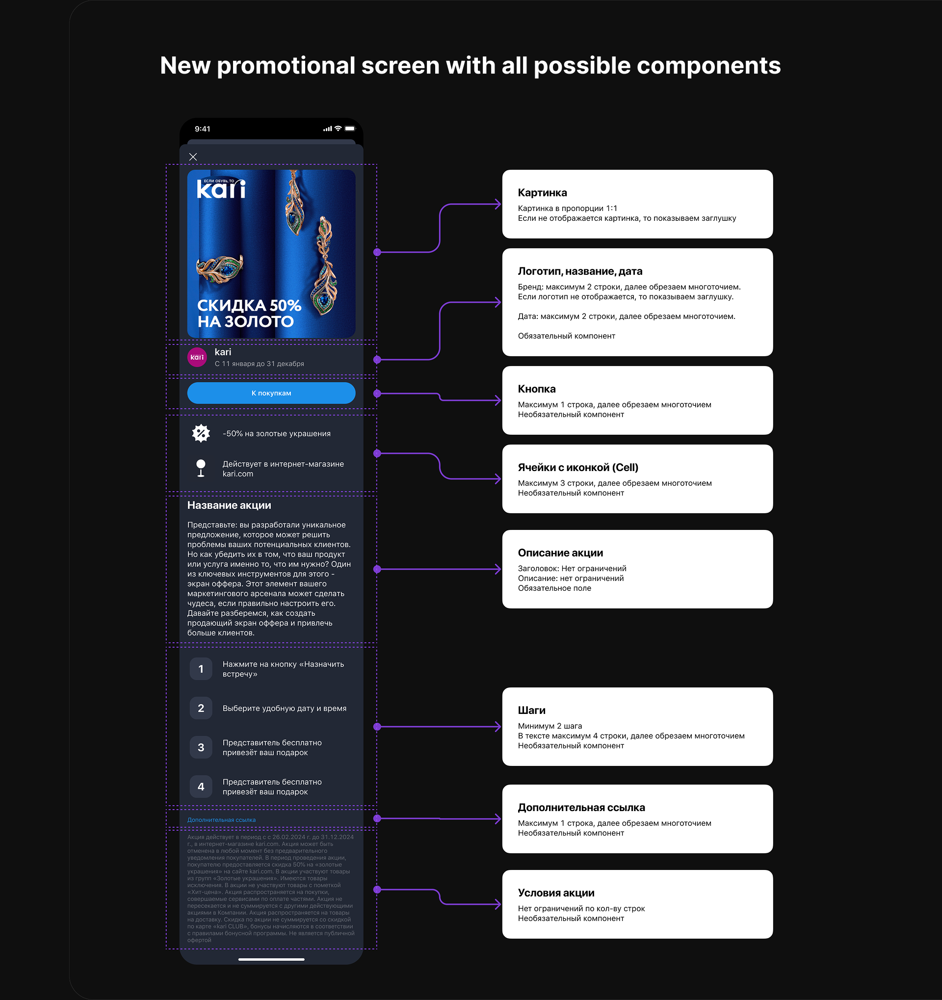
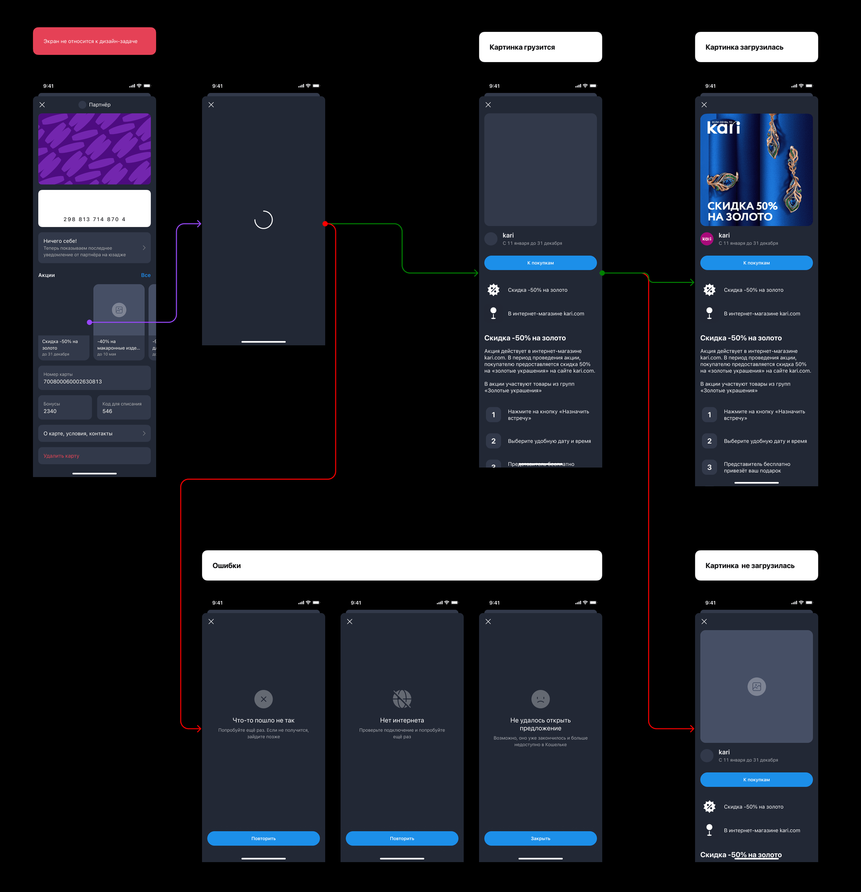
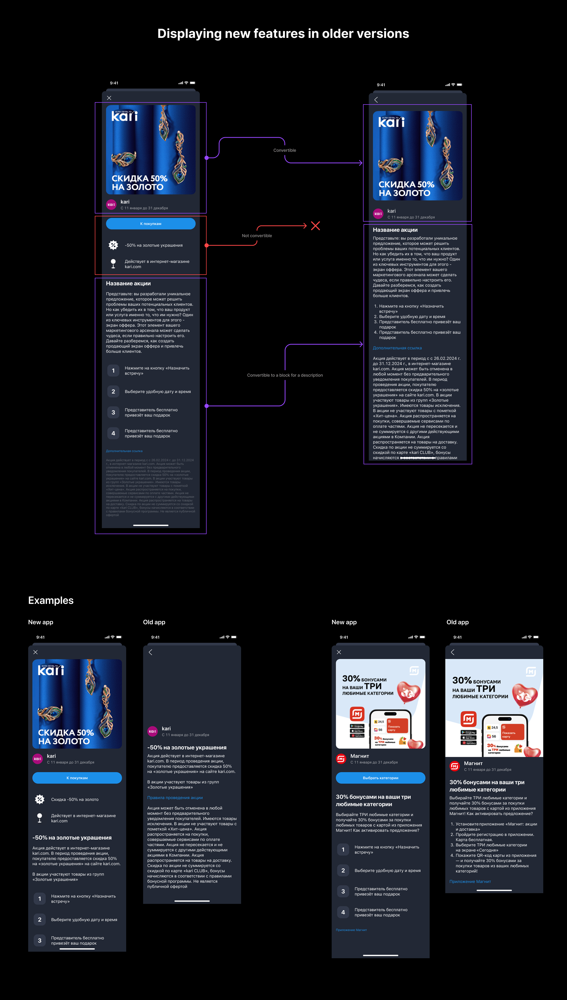
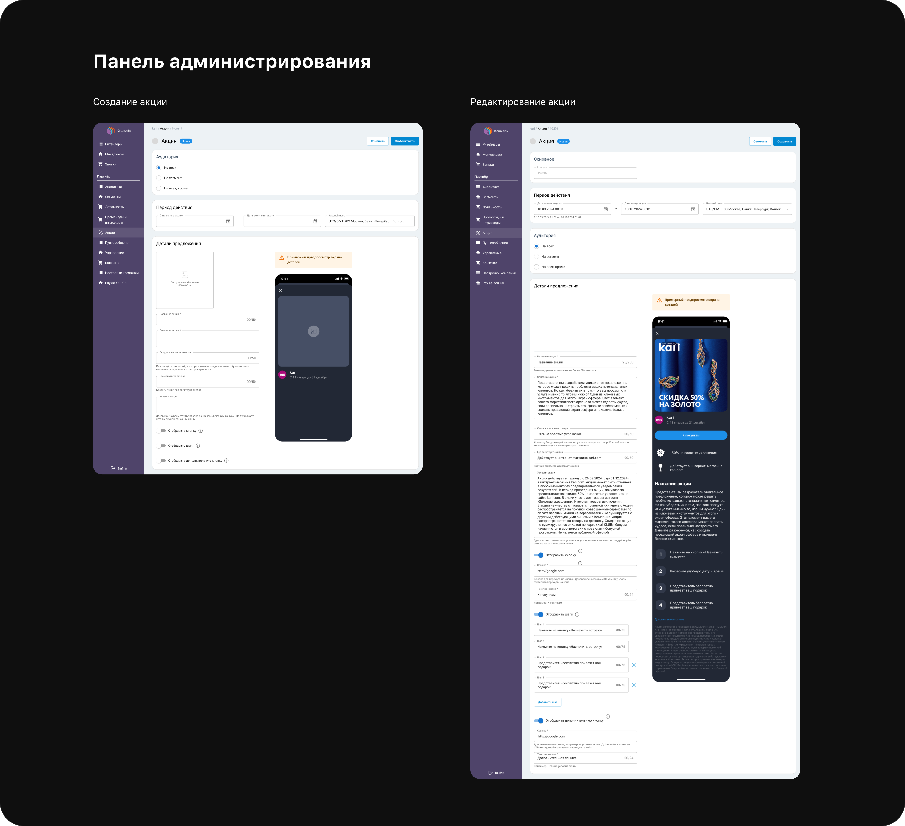

Koshelek, a mobile app for loyalty cards, cashback, bonuses, and partner promotions within the T-Bank ecosystem.
Koshelek. Loyalty Experience

Overview
Koshelek is a mobile app for storing loyalty cards, earning cashback, tracking bonuses, and interacting with partner promotions. As part of the monetization team, I worked on improving advertising and promotional mechanics within the app.
One of the largest projects was the redesign of the partner promotions platform, a core touchpoint between users and merchant offers inside the product.
The goal was not only to refresh the UI, but to create a scalable system that would improve readability, provide a clear next step for users, and reduce operational load for the business.
Redesigning the Partner Promotions Platform
Key screens

Description
At first, the task looked like a simple redesign of the promotion screen. But after analyzing existing campaigns, it became clear that the problem was much broader.
The screen had become visually outdated, content structure varied from partner to partner, and users struggled to quickly understand promotion terms. After reviewing an offer, the journey often ended because there was no clear next action.
Goal
Create a scalable solution that standardizes promotion
presentation, improves readability, provides a clear next
step, and gives partners more flexibility in content management.
Research showed that promotions differed significantly: some focused on discounts, some were informational, and others used gamified or motivational mechanics. Despite their differences, the content could be grouped into a few stable structural patterns.
- Analyzed existing user flows and partner promotion content.
- Designed a universal screen structure for different promotion types.
- Proposed a modular content builder instead of another one-off screen redesign.
- Designed an admin panel for partners with content management and browser preview.
- Added a CTA button so users could continue to the partner site or landing page.
The final platform balanced the needs of users, partners, and the business at the same time: users got a clearer experience, partners gained flexibility and stronger brand presentation, and internal teams reduced manual workload.
Instead of making a local UI improvement, we created a scalable system that standardized promotion launches and improved both clicks and purchases after launch.
Scenario


Partner Cabinet for Creating and Managing Promotions

Description
An important part of the solution was not only the user-facing promotion screen, but also the partner-facing interface where promotions could be configured and managed.
To reduce the load on internal teams and make launches more scalable, I designed a cabinet where partners could fill in promotion details, manage content blocks, and preview the result before publishing.
Why it mattered
A flexible admin experience made the promotion platform
usable not just for users, but also for the people who
create and maintain campaigns.
- Supported promotion creation and editing in one interface.
- Helped partners manage content without relying on bespoke templates.
- Included preview states to validate how the promotion would appear in the app.
- Made the launch process more standardized and scalable for the business.